[114]:
import numpy as np
import pandas as pd
from scipy.linalg import expm, null_space, solve
from scipy.sparse.linalg import expm_multiply
import matplotlib.pyplot as plt
import networkx as nx
from networkx.algorithms.isomorphism import GraphMatcher
import pyvis.network as nt
from qlinks.lattice.square_lattice import SquareLattice
from qlinks.symmetry.gauss_law import GaussLaw
from qlinks.solver.deep_first_search import DeepFirstSearch
from qlinks.model import QuantumLinkModel
from qlinks.visualizer.graph import GraphVisualizer
[6]:
def format_custom_index(index):
return [f"({i}) {idx}" for i, idx in enumerate(index)]
[3]:
def setup_model(lattice_shape, n_solution, coup_j, coup_rk):
gauss_law = GaussLaw.from_staggered_charge_distri(*lattice_shape)
gauss_law.flux_sector = (0, 0)
dfs = DeepFirstSearch(gauss_law, max_steps=int(1e+8))
basis = gauss_law.to_basis(dfs.solve(n_solution))
model = QuantumLinkModel(coup_j, coup_rk, lattice_shape, basis)
return basis, model
Lattice 4x2#
[115]:
coup_j, coup_rk = (1, -1)
basis, model = setup_model(lattice_shape=(4, 2), n_solution=16, coup_j=coup_j, coup_rk=coup_rk)
evals, evecs = np.linalg.eigh(model.hamiltonian)
2023-12-18 13:44:53 [deep_first_search.py] INFO: Deep First Search starts.
2023-12-18 13:44:53 [deep_first_search.py] INFO: Found 16 Solutions as required in 103 steps.
[116]:
df = basis.dataframe.copy(deep=True)
df.index = format_custom_index(df.index)
df
[116]:
| 0 | 1 | 2 | 3 | 4 | 5 | 6 | 7 | 8 | 9 | 10 | 11 | 12 | 13 | 14 | 15 | |
|---|---|---|---|---|---|---|---|---|---|---|---|---|---|---|---|---|
| (0) 17595 | 0 | 1 | 0 | 0 | 0 | 1 | 0 | 0 | 1 | 0 | 1 | 1 | 1 | 0 | 1 | 1 |
| (1) 18867 | 0 | 1 | 0 | 0 | 1 | 0 | 0 | 1 | 1 | 0 | 1 | 1 | 0 | 0 | 1 | 1 |
| (2) 19638 | 0 | 1 | 0 | 0 | 1 | 1 | 0 | 0 | 1 | 0 | 1 | 1 | 0 | 1 | 1 | 0 |
| (3) 36135 | 1 | 0 | 0 | 0 | 1 | 1 | 0 | 1 | 0 | 0 | 1 | 0 | 0 | 1 | 1 | 1 |
| (4) 37947 | 1 | 0 | 0 | 1 | 0 | 1 | 0 | 0 | 0 | 0 | 1 | 1 | 1 | 0 | 1 | 1 |
| (5) 39219 | 1 | 0 | 0 | 1 | 1 | 0 | 0 | 1 | 0 | 0 | 1 | 1 | 0 | 0 | 1 | 1 |
| (6) 39990 | 1 | 0 | 0 | 1 | 1 | 1 | 0 | 0 | 0 | 0 | 1 | 1 | 0 | 1 | 1 | 0 |
| (7) 44307 | 1 | 0 | 1 | 0 | 1 | 1 | 0 | 1 | 0 | 0 | 0 | 1 | 0 | 0 | 1 | 1 |
| (8) 50283 | 1 | 1 | 0 | 0 | 0 | 1 | 0 | 0 | 0 | 1 | 1 | 0 | 1 | 0 | 1 | 1 |
| (9) 51555 | 1 | 1 | 0 | 0 | 1 | 0 | 0 | 1 | 0 | 1 | 1 | 0 | 0 | 0 | 1 | 1 |
| (10) 52326 | 1 | 1 | 0 | 0 | 1 | 1 | 0 | 0 | 0 | 1 | 1 | 0 | 0 | 1 | 1 | 0 |
| (11) 52773 | 1 | 1 | 0 | 0 | 1 | 1 | 1 | 0 | 0 | 0 | 1 | 0 | 0 | 1 | 0 | 1 |
| (12) 55410 | 1 | 1 | 0 | 1 | 1 | 0 | 0 | 0 | 0 | 1 | 1 | 1 | 0 | 0 | 1 | 0 |
| (13) 55857 | 1 | 1 | 0 | 1 | 1 | 0 | 1 | 0 | 0 | 0 | 1 | 1 | 0 | 0 | 0 | 1 |
| (14) 60498 | 1 | 1 | 1 | 0 | 1 | 1 | 0 | 0 | 0 | 1 | 0 | 1 | 0 | 0 | 1 | 0 |
| (15) 60945 | 1 | 1 | 1 | 0 | 1 | 1 | 1 | 0 | 0 | 0 | 0 | 1 | 0 | 0 | 0 | 1 |
[11]:
evecs_df = pd.DataFrame.from_dict(
{
"eval": evals,
"kin": [(evec.T @ model.kinetic_term @ evec).item() for evec in evecs.T],
"pot": [(evec.T @ model.potential_term @ evec).item() for evec in evecs.T],
}
)
evecs_df #[evecs_df["kin"].abs() < 1e-12]
[11]:
| eval | kin | pot | |
|---|---|---|---|
| 0 | -6.561553e+00 | -3.076482e+00 | -3.485071 |
| 1 | -5.778457e+00 | -2.310811e+00 | -3.467646 |
| 2 | -5.561553e+00 | -1.940285e+00 | -3.621268 |
| 3 | -4.000000e+00 | -6.749917e-02 | -3.932501 |
| 4 | -4.000000e+00 | -1.327528e+00 | -2.672472 |
| 5 | -4.000000e+00 | -1.271640e+00 | -2.728360 |
| 6 | -3.000000e+00 | -1.972152e-30 | -3.000000 |
| 7 | -3.000000e+00 | -1.454462e-30 | -3.000000 |
| 8 | -3.000000e+00 | -5.423419e-31 | -3.000000 |
| 9 | -2.710831e+00 | 7.852513e-02 | -2.789357 |
| 10 | -2.438447e+00 | 7.648156e-02 | -2.514929 |
| 11 | -1.438447e+00 | 1.940285e+00 | -3.378732 |
| 12 | -1.000000e+00 | 1.333333e+00 | -2.333333 |
| 13 | -1.000000e+00 | 1.333333e+00 | -2.333333 |
| 14 | -5.107114e-01 | 2.232286e+00 | -2.742997 |
| 15 | 2.423409e-15 | 3.000000e+00 | -3.000000 |
[117]:
g = nx.from_numpy_array(-model.kinetic_term)
assert nx.is_bipartite(g)
# left, right = nx.bipartite.sets(g)
# pos = nx.bipartite_layout(g, left, align="horizontal")
pos = nx.spectral_layout(g)
pos = {k: v + np.random.normal(0, 0.05, 2) for k, v in pos.items()}
nx.draw(g, pos, with_labels=True, arrows=True, connectionstyle="arc3,rad=0.2")
plt.show()
plt.spy(evecs, precision=1e-12, markersize=12)
plt.show()
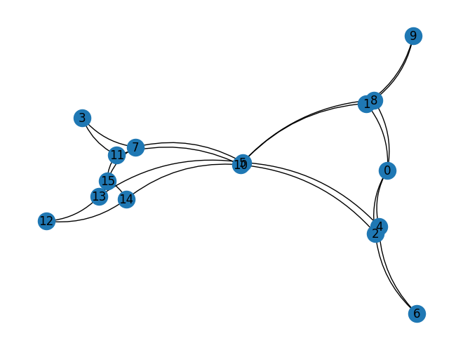
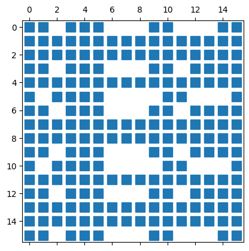
[124]:
G_pattern = nx.Graph()
G_pattern.add_nodes_from([0, 1, 2, 3, 4, 5, 6, 7, 8])
G_pattern.add_edges_from([(0, 1), (0, 2), (1, 3), (1, 4), (2, 4), (2, 5), (3, 6), (4, 6), (4, 7), (5, 7), (6, 8), (7, 8)])
# nx.draw(G_pattern, nx.spectral_layout(G_pattern), with_labels=True)
gm = GraphMatcher(g, G_pattern)
subgraphs = set([frozenset(subgraph_nodes) for subgraph_nodes in gm.subgraph_isomorphisms_iter()])
print(subgraphs)
{frozenset({3, 5, 7, 10, 11, 12, 13, 14, 15}), frozenset({0, 1, 2, 4, 5, 6, 8, 9, 10})}
[78]:
entropies = np.asarray([model.entropy(evecs[:, i], 1, 0) for i in range(basis.n_states)])
entropy_df = pd.Series(entropies, name="entropy")
entropy_df
[78]:
0 1.536650
1 1.899841
2 0.695771
3 1.562885
4 1.528069
5 1.600664
6 1.932517
7 1.525501
8 1.611432
9 1.481633
10 1.941802
11 0.973698
12 1.147446
13 1.309708
14 1.502661
15 1.501048
Name: entropy, dtype: float64
[79]:
entropy_df.plot(style='o')
[79]:
<Axes: >
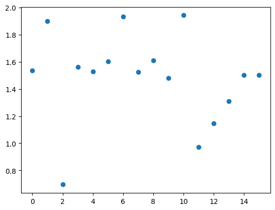
[81]:
plt.plot(evecs[:, 8], linestyle='--', marker='o')
np.where(np.abs(evecs[:, 8]) > 0.2)[0]
[81]:
array([ 1, 2, 4, 7, 8, 11, 13, 14])
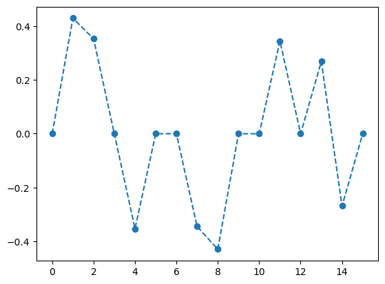
[37]:
fig, axes = plt.subplots(4, 4, figsize=(20, 12), facecolor="white")
ax = axes.flatten()
for i in range(basis.n_states):
g = GraphVisualizer(SquareLattice(*model.shape, basis.dataframe.iloc[i]))
g.plot(show=False, ax=ax[i], node_size=800)
ax[i].set_title(f"{df.index[i]}")
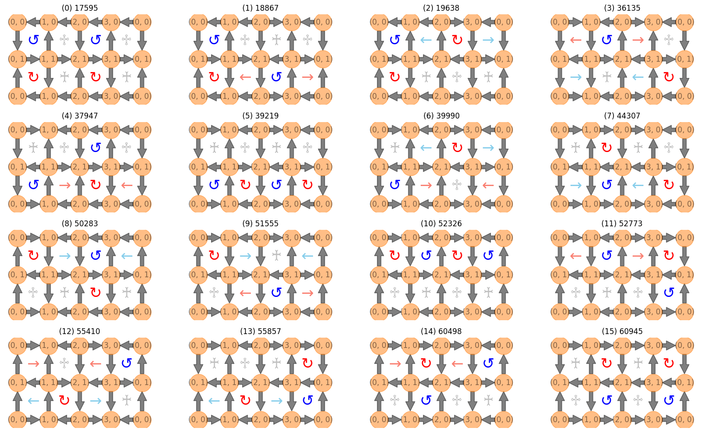
[19]:
coup_j = np.ones((np.prod(model.shape), 1))
coup_j[0] = 1.1
energy_lump_model = QuantumLinkModel(coup_j, coup_rk, model.shape, basis)
energy_lump_ham = energy_lump_model.hamiltonian
scar_state = np.zeros((basis.n_states, 1))
scar_state[np.array([1, 2, 4, 8]), 0] = np.array([1, 1, -1, -1])
scar_state /= np.linalg.norm(scar_state)
start, stop, num = 0, 2000, 100
evol_states = expm_multiply(-1j * energy_lump_ham, scar_state, start=start, stop=stop, num=num)
fidelity = [np.abs(evol_state.T @ scar_state).item() ** 2 for evol_state in evol_states]
entropy = [model.entropy(evol_state.flatten(), 1, 0) for evol_state in evol_states]
plt.plot(np.linspace(start, stop, num), fidelity, linestyle="--", marker="o")
plt.ylim(0.0001, 1.1)
# plt.yscale('log')
plt.xlabel("t")
plt.ylabel("Fidelity(t)")
plt.tight_layout()
plt.show()
plt.plot(np.linspace(start, stop, num), entropy, linestyle="--", marker="o")
plt.xlabel("t")
plt.ylabel("EE(t)")
plt.tight_layout()
plt.show()
final_state = np.real_if_close(evol_states[-1], tol=1e-12)
print(f"final fidelity = {fidelity[-1]}")
print(f"O_kin @ psi_scar = {(model.kinetic_term @ final_state).flatten()}")
print(f"<O_kin> = {(final_state.T @ model.kinetic_term @ final_state).item()}")
print(f"<O_pot> = {(final_state.T @ model.potential_term @ final_state).item()}")
print(f"<H> = {(final_state.T @ model.hamiltonian @ final_state).item()}")
/Users/tandaolin/projects/qlinks/.venv/lib/python3.11/site-packages/scipy/sparse/linalg/_eigen/arpack/arpack.py:1272: RuntimeWarning: k >= N - 1 for N * N square matrix. Attempting to use scipy.linalg.eig instead.
warnings.warn("k >= N - 1 for N * N square matrix. "
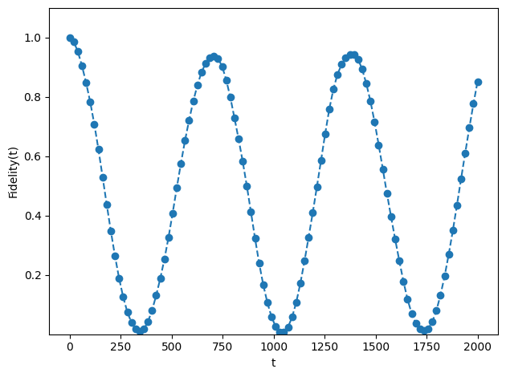
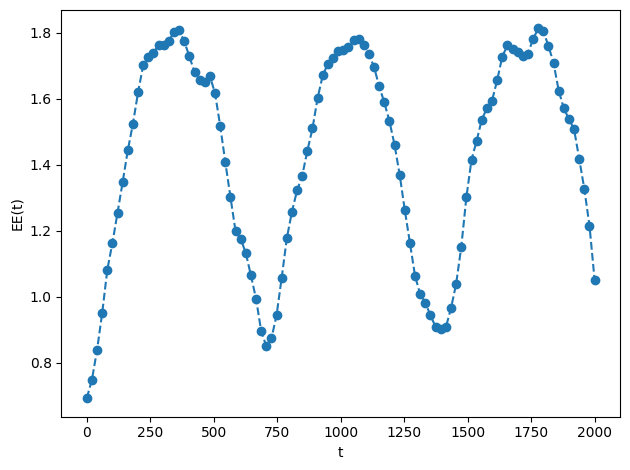
final fidelity = 0.8523796401694091
O_kin @ psi_scar = [ 0.03573328+0.06279851j 0.01264524+0.00763362j 0.00552044-0.01920577j
-0.00927429-0.02688624j 0.01439395+0.00623692j -0.00492205-0.02138102j
0.0192293 +0.02524652j 0.00104795+0.02089732j 0.00377173-0.01780907j
0.01650398+0.03755199j 0.02210676+0.03040705j -0.00782556-0.00454537j
-0.00927429-0.02688624j 0.00104795+0.02089732j -0.00782556-0.00454537j
-0.01854857-0.05377248j]
<O_kin> = (-0.0034461988995348066+0.00038414215566797425j)
<O_pot> = (-1.4303439563722726-1.6320856892703994j)
<H> = (-1.4337901552718078-1.6317015471147316j)
[33]:
net = nt.Network(notebook=True, filter_menu=True, select_menu=True)
net.from_nx(g)
net.show_buttons(filter_=['nodes', 'edges', 'physics'])
net.show("nx.html")
Warning: When cdn_resources is 'local' jupyter notebook has issues displaying graphics on chrome/safari. Use cdn_resources='in_line' or cdn_resources='remote' if you have issues viewing graphics in a notebook.
nx.html
[33]:
Lattice 4x4#
[126]:
coup_j, coup_rk = (1, 1)
basis, model = setup_model(lattice_shape=(4, 4), n_solution=132, coup_j=coup_j, coup_rk=coup_rk)
evals, evecs = np.linalg.eigh(model.hamiltonian)
2023-12-18 13:57:51 [deep_first_search.py] INFO: Deep First Search starts.
2023-12-18 13:57:51 [deep_first_search.py] INFO: Found 132 Solutions as required in 1626 steps.
[127]:
df = basis.dataframe.copy(deep=True)
df.index = format_custom_index(df.index)
df
[127]:
| 0 | 1 | 2 | 3 | 4 | 5 | 6 | 7 | 8 | 9 | ... | 22 | 23 | 24 | 25 | 26 | 27 | 28 | 29 | 30 | 31 | |
|---|---|---|---|---|---|---|---|---|---|---|---|---|---|---|---|---|---|---|---|---|---|
| (0) 1142025915 | 0 | 1 | 0 | 0 | 0 | 1 | 0 | 0 | 0 | 0 | ... | 1 | 0 | 1 | 0 | 1 | 1 | 1 | 0 | 1 | 1 |
| (1) 1143328443 | 0 | 1 | 0 | 0 | 0 | 1 | 0 | 0 | 0 | 0 | ... | 1 | 0 | 1 | 0 | 1 | 1 | 1 | 0 | 1 | 1 |
| (2) 1146285243 | 0 | 1 | 0 | 0 | 0 | 1 | 0 | 0 | 0 | 1 | ... | 0 | 0 | 1 | 0 | 1 | 1 | 1 | 0 | 1 | 1 |
| (3) 1147587771 | 0 | 1 | 0 | 0 | 0 | 1 | 0 | 0 | 0 | 1 | ... | 0 | 0 | 1 | 0 | 1 | 1 | 1 | 0 | 1 | 1 |
| (4) 1147913403 | 0 | 1 | 0 | 0 | 0 | 1 | 0 | 0 | 0 | 1 | ... | 0 | 0 | 1 | 0 | 1 | 1 | 1 | 0 | 1 | 1 |
| ... | ... | ... | ... | ... | ... | ... | ... | ... | ... | ... | ... | ... | ... | ... | ... | ... | ... | ... | ... | ... | ... |
| (127) 3998411793 | 1 | 1 | 1 | 0 | 1 | 1 | 1 | 0 | 0 | 1 | ... | 0 | 0 | 0 | 0 | 0 | 1 | 0 | 0 | 0 | 1 |
| (128) 3999714321 | 1 | 1 | 1 | 0 | 1 | 1 | 1 | 0 | 0 | 1 | ... | 0 | 0 | 0 | 0 | 0 | 1 | 0 | 0 | 0 | 1 |
| (129) 4000039953 | 1 | 1 | 1 | 0 | 1 | 1 | 1 | 0 | 0 | 1 | ... | 0 | 0 | 0 | 0 | 0 | 1 | 0 | 0 | 0 | 1 |
| (130) 4004924433 | 1 | 1 | 1 | 0 | 1 | 1 | 1 | 0 | 1 | 0 | ... | 0 | 0 | 0 | 0 | 0 | 1 | 0 | 0 | 0 | 1 |
| (131) 4005250065 | 1 | 1 | 1 | 0 | 1 | 1 | 1 | 0 | 1 | 0 | ... | 0 | 0 | 0 | 0 | 0 | 1 | 0 | 0 | 0 | 1 |
132 rows × 32 columns
[84]:
evecs_df = pd.DataFrame.from_dict(
{
"eval": evals,
"kin": [(evec.T @ model.kinetic_term @ evec).item() for evec in evecs.T],
"pot": [(evec.T @ model.potential_term @ evec).item() for evec in evecs.T],
}
)
evecs_df[evecs_df["kin"].abs() < 1e-12]
[84]:
| eval | kin | pot | |
|---|---|---|---|
| 47 | 4.0 | -9.907176e-30 | 4.0 |
| 48 | 4.0 | -8.923989e-30 | 4.0 |
| 49 | 4.0 | -9.959369e-30 | 4.0 |
| 50 | 4.0 | -6.914859e-30 | 4.0 |
| 51 | 4.0 | -5.756219e-30 | 4.0 |
| 52 | 4.0 | 3.056836e-30 | 4.0 |
| 53 | 4.0 | -2.465190e-30 | 4.0 |
| 54 | 4.0 | -1.015658e-29 | 4.0 |
| 55 | 4.0 | -1.005798e-29 | 4.0 |
[170]:
g = nx.from_numpy_array(-model.kinetic_term)
# left, right = nx.bipartite.sets(g)
# pos = nx.bipartite_layout(g, left, align='horizontal')
pos = nx.spectral_layout(g)
pos = {k: v + np.random.normal(0, 0.01, 2) for k, v in pos.items()}
fig = plt.figure(figsize=(82, 32))
nx.draw(g, pos, with_labels=True, node_size=5000, font_size=42, arrows=True, connectionstyle="arc3,rad=0.15")
plt.show()
plt.spy(evecs, precision=1e-12, markersize=0.1)
plt.show()
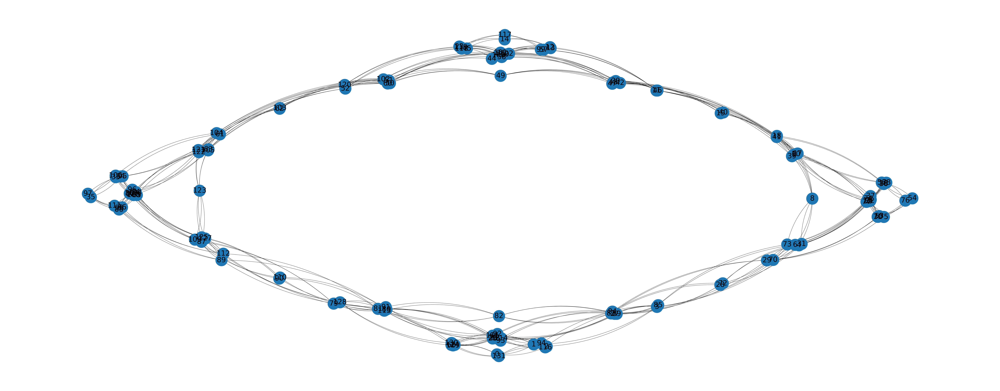
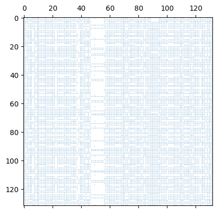
[167]:
# G_pattern = nx.Graph()
# G_pattern.add_nodes_from([0, 1, 2, 3, 4, 5, 6, 7, 8, 9, 10, 11, 12, 13, 14])
# G_pattern.add_edges_from([(0, 1), (0, 5), (2, 1), (2, 7), (1, 3), (1, 4), (3, 5), (3, 6), (4, 6), (4, 7), (5, 10), (5, 9), (6, 8), (6, 9), (7, 8), (7, 12), (8, 11), (9, 11), (10, 11), (12, 11), (3, 13), (13, 9), (4, 14), (14, 8)])
G_pattern = g.subgraph([131, 94, 116, 130, 129, 93, 92, 115, 114, 85, 84, 91, 128, 83, 82, 113])
# print(np.linalg.matrix_rank(nx.to_numpy_array(G_pattern)))
# left, right = nx.bipartite.sets(G_pattern)
nx.draw(G_pattern, nx.spectral_layout(G_pattern), with_labels=True)
gm = GraphMatcher(g, G_pattern)
subgraphs = set([frozenset(subgraph_nodes) for subgraph_nodes in gm.subgraph_isomorphisms_iter()])
print(len(subgraphs))
for subgraph in subgraphs:
if any(head_node in list(subgraph) for head_node in [131, 0, 54, 76, 97, 35, 14, 117]):
pass
else:
print(subgraph)
12
frozenset({3, 4, 69, 70, 6, 8, 72, 73, 82, 83, 84, 85, 27, 28, 29, 31})
frozenset({102, 103, 104, 105, 49, 50, 51, 52, 120, 121, 122, 123, 60, 61, 62, 63})
frozenset({128, 79, 80, 81, 82, 87, 89, 90, 91, 109, 110, 112, 113, 123, 125, 127})
frozenset({8, 9, 10, 11, 17, 18, 19, 20, 39, 40, 41, 42, 46, 47, 48, 49})
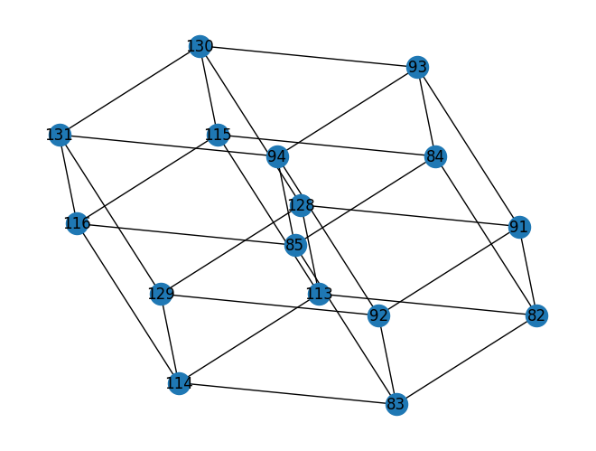
[133]:
net = nt.Network(notebook=True, filter_menu=True, select_menu=True, font_color="black")
net.from_nx(g)
for node in net.nodes:
node["title"] = str(node["id"])
net.show_buttons(filter_=['nodes', 'edges', 'physics'])
net.show("nx.html")
Warning: When cdn_resources is 'local' jupyter notebook has issues displaying graphics on chrome/safari. Use cdn_resources='in_line' or cdn_resources='remote' if you have issues viewing graphics in a notebook.
nx.html
[133]:
[53]:
print(np.linalg.matrix_rank(model.kinetic_term))
plt.matshow(evecs[:, 46:60].T)
plt.colorbar()
102
[53]:
<matplotlib.colorbar.Colorbar at 0x133d8ff90>
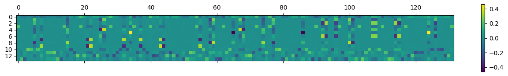
[54]:
entropies = np.asarray([model.entropy(evecs[:, i], 0, 0) for i in range(basis.n_states)])
entropy_df = pd.Series(entropies, name="entropy")
entropy_df[entropy_df < 1.75]
[54]:
51 1.239624
53 1.603249
55 1.675178
Name: entropy, dtype: float64
[55]:
entropy_df.plot(style='o')
[55]:
<Axes: >
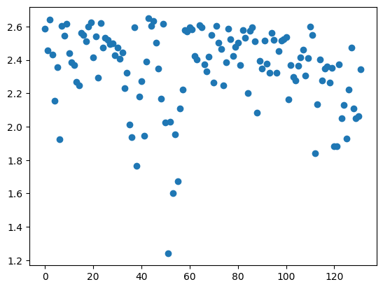
[187]:
i = 49
plt.plot(evecs[:, i], linestyle='--', marker='o')
np.where(np.abs(evecs[:, i]) > 0.05)[0]
[187]:
array([ 0, 5, 7, 14, 15, 19, 21, 22, 25, 26, 28, 32, 34,
35, 37, 40, 43, 44, 54, 55, 58, 59, 62, 65, 67, 68,
72, 74, 76, 77, 86, 90, 92, 93, 96, 97, 100, 101, 103,
107, 108, 110, 114, 115, 117, 124, 126, 131])
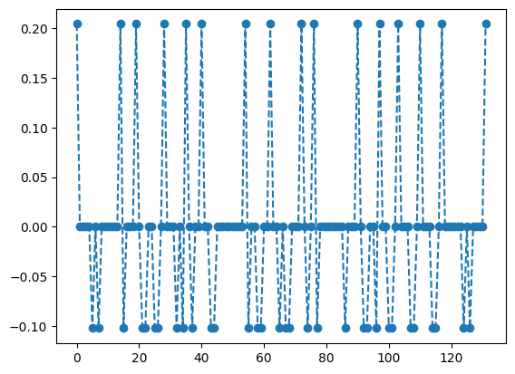
[57]:
# {i: len(np.where(np.abs(evecs[:, i]) > 1e-12)[0]) for i in range(300)}
for i in np.where(np.abs(evecs[:, 51]) > 0.2)[0]:
g = GraphVisualizer(SquareLattice(*model.shape, basis.dataframe.iloc[i]))
# plt.figure(figsize=(10, 4), facecolor='white')
g.plot()
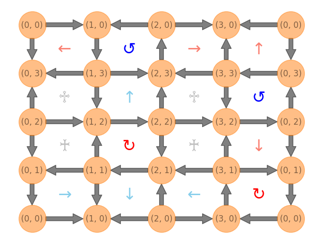
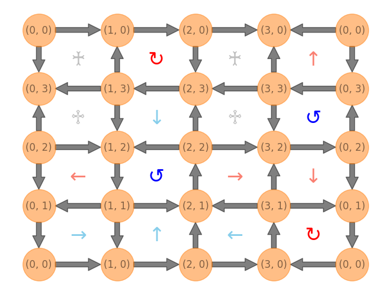
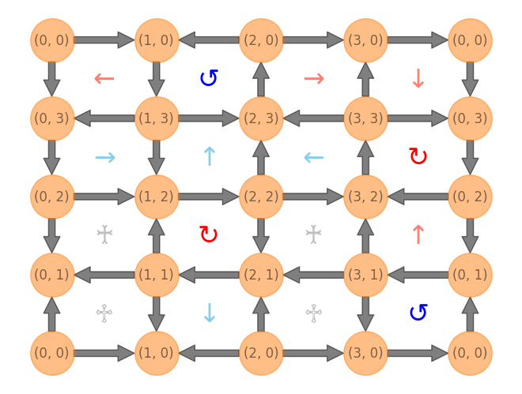
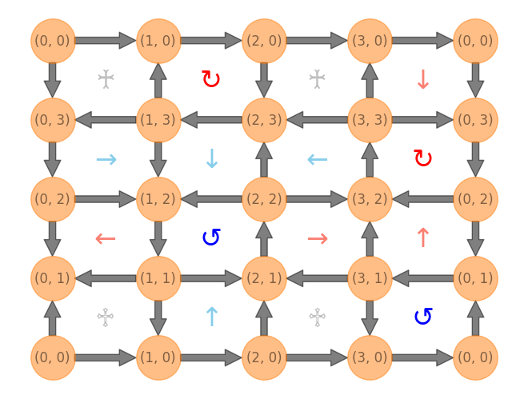
[24]:
coup_j = np.ones((np.prod(model.shape), 1))
coup_j[4] = 1.1
energy_lump_model = QuantumLinkModel(coup_j, coup_rk, model.shape, basis)
energy_lump_ham = energy_lump_model.hamiltonian
scar_state = np.zeros((basis.n_states, 1))
scar_state[np.array([34, 65, 86, 124]), 0] = np.array([1, -1, -1, 1])
scar_state /= np.linalg.norm(scar_state)
start, stop, num = 0, 2000, 100
evol_states = expm_multiply(-1j * energy_lump_ham, scar_state, start=start, stop=stop, num=num)
fidelity = [np.abs(evol_state.T @ scar_state).item() ** 2 for evol_state in evol_states]
entropy = [model.entropy(evol_state.flatten(), 1, 0) for evol_state in evol_states]
plt.plot(np.linspace(start, stop, num), fidelity, linestyle="--", marker="o")
plt.ylim(0.0001, 1.1)
# plt.yscale('log')
plt.xlabel("t")
plt.ylabel("Fidelity(t)")
plt.tight_layout()
plt.show()
plt.plot(np.linspace(start, stop, num), entropy, linestyle="--", marker="o")
plt.xlabel("t")
plt.ylabel("EE(t)")
plt.tight_layout()
plt.show()
final_state = np.real_if_close(evol_states[-1], tol=1e-12)
print(f"final fidelity = {fidelity[-1]}")
print(f"O_kin @ psi_scar = {(model.kinetic_term @ final_state).flatten()}")
print(f"<O_kin> = {(final_state.T @ model.kinetic_term @ final_state).item()}")
print(f"<O_pot> = {(final_state.T @ model.potential_term @ final_state).item()}")
print(f"<H> = {(final_state.T @ model.hamiltonian @ final_state).item()}")
/Users/tandaolin/projects/qlinks/.venv/lib/python3.11/site-packages/scipy/sparse/linalg/_eigen/arpack/arpack.py:1272: RuntimeWarning: k >= N - 1 for N * N square matrix. Attempting to use scipy.linalg.eig instead.
warnings.warn("k >= N - 1 for N * N square matrix. "
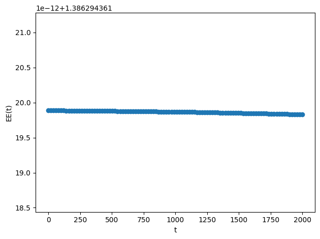
final fidelity = 0.9999999999998415
O_kin @ psi_scar = [0.+0.j 0.+0.j 0.+0.j 0.+0.j 0.+0.j 0.+0.j 0.+0.j 0.+0.j 0.+0.j 0.+0.j
0.+0.j 0.+0.j 0.+0.j 0.+0.j 0.+0.j 0.+0.j 0.+0.j 0.+0.j 0.+0.j 0.+0.j
0.+0.j 0.+0.j 0.+0.j 0.+0.j 0.+0.j 0.+0.j 0.+0.j 0.+0.j 0.+0.j 0.+0.j
0.+0.j 0.+0.j 0.+0.j 0.+0.j 0.+0.j 0.+0.j 0.+0.j 0.+0.j 0.+0.j 0.+0.j
0.+0.j 0.+0.j 0.+0.j 0.+0.j 0.+0.j 0.+0.j 0.+0.j 0.+0.j 0.+0.j 0.+0.j
0.+0.j 0.+0.j 0.+0.j 0.+0.j 0.+0.j 0.+0.j 0.+0.j 0.+0.j 0.+0.j 0.+0.j
0.+0.j 0.+0.j 0.+0.j 0.+0.j 0.+0.j 0.+0.j 0.+0.j 0.+0.j 0.+0.j 0.+0.j
0.+0.j 0.+0.j 0.+0.j 0.+0.j 0.+0.j 0.+0.j 0.+0.j 0.+0.j 0.+0.j 0.+0.j
0.+0.j 0.+0.j 0.+0.j 0.+0.j 0.+0.j 0.+0.j 0.+0.j 0.+0.j 0.+0.j 0.+0.j
0.+0.j 0.+0.j 0.+0.j 0.+0.j 0.+0.j 0.+0.j 0.+0.j 0.+0.j 0.+0.j 0.+0.j
0.+0.j 0.+0.j 0.+0.j 0.+0.j 0.+0.j 0.+0.j 0.+0.j 0.+0.j 0.+0.j 0.+0.j
0.+0.j 0.+0.j 0.+0.j 0.+0.j 0.+0.j 0.+0.j 0.+0.j 0.+0.j 0.+0.j 0.+0.j
0.+0.j 0.+0.j 0.+0.j 0.+0.j 0.+0.j 0.+0.j 0.+0.j 0.+0.j 0.+0.j 0.+0.j
0.+0.j 0.+0.j]
<O_kin> = 0j
<O_pot> = (-3.9655257378729605-0.5240282647549068j)
<H> = (-3.9655257378729605-0.5240282647549068j)
Lattice 6x2#
[92]:
coup_j, coup_rk = (1, 1)
basis, model = setup_model(lattice_shape=(6, 2), n_solution=76, coup_j=coup_j, coup_rk=coup_rk)
evals, evecs = np.linalg.eigh(model.hamiltonian)
2023-12-17 16:57:20 [deep_first_search.py] INFO: Deep First Search starts.
2023-12-17 16:57:20 [deep_first_search.py] INFO: Found 76 Solutions as required in 693 steps.
[93]:
df = basis.dataframe.copy(deep=True)
df.index = format_custom_index(df.index)
df
[93]:
| 0 | 1 | 2 | 3 | 4 | 5 | 6 | 7 | 8 | 9 | ... | 14 | 15 | 16 | 17 | 18 | 19 | 20 | 21 | 22 | 23 | |
|---|---|---|---|---|---|---|---|---|---|---|---|---|---|---|---|---|---|---|---|---|---|
| (0) 4475835 | 0 | 1 | 0 | 0 | 0 | 1 | 0 | 0 | 0 | 1 | ... | 1 | 1 | 1 | 0 | 1 | 1 | 1 | 0 | 1 | 1 |
| (1) 4496307 | 0 | 1 | 0 | 0 | 0 | 1 | 0 | 0 | 1 | 0 | ... | 1 | 1 | 1 | 0 | 1 | 1 | 0 | 0 | 1 | 1 |
| (2) 4508598 | 0 | 1 | 0 | 0 | 0 | 1 | 0 | 0 | 1 | 1 | ... | 1 | 1 | 1 | 0 | 1 | 1 | 0 | 1 | 1 | 0 |
| (3) 4774695 | 0 | 1 | 0 | 0 | 1 | 0 | 0 | 0 | 1 | 1 | ... | 1 | 1 | 0 | 0 | 1 | 0 | 0 | 1 | 1 | 1 |
| (4) 4803387 | 0 | 1 | 0 | 0 | 1 | 0 | 0 | 1 | 0 | 1 | ... | 1 | 1 | 0 | 0 | 1 | 1 | 1 | 0 | 1 | 1 |
| ... | ... | ... | ... | ... | ... | ... | ... | ... | ... | ... | ... | ... | ... | ... | ... | ... | ... | ... | ... | ... | ... |
| (71) 15524133 | 1 | 1 | 1 | 0 | 1 | 1 | 0 | 0 | 1 | 1 | ... | 0 | 1 | 0 | 0 | 1 | 0 | 0 | 1 | 0 | 1 |
| (72) 15566130 | 1 | 1 | 1 | 0 | 1 | 1 | 0 | 1 | 1 | 0 | ... | 0 | 1 | 0 | 0 | 1 | 1 | 0 | 0 | 1 | 0 |
| (73) 15573297 | 1 | 1 | 1 | 0 | 1 | 1 | 0 | 1 | 1 | 0 | ... | 0 | 1 | 0 | 0 | 1 | 1 | 0 | 0 | 0 | 1 |
| (74) 15648018 | 1 | 1 | 1 | 0 | 1 | 1 | 1 | 0 | 1 | 1 | ... | 0 | 1 | 0 | 0 | 0 | 1 | 0 | 0 | 1 | 0 |
| (75) 15655185 | 1 | 1 | 1 | 0 | 1 | 1 | 1 | 0 | 1 | 1 | ... | 0 | 1 | 0 | 0 | 0 | 1 | 0 | 0 | 0 | 1 |
76 rows × 24 columns
[6]:
fig, axes = plt.subplots(19, 4, figsize=(30, 60), facecolor="white")
ax = axes.flatten()
for i in range(basis.n_states):
g = GraphVisualizer(SquareLattice(*model.shape, basis.dataframe.iloc[i]))
g.plot(show=False, ax=ax[i], node_size=800)
ax[i].set_title(f"{df.index[i]}")

[94]:
g = nx.from_numpy_array(-model.kinetic_term)
# left, right = nx.bipartite.sets(g)
# pos = nx.bipartite_layout(g, left, align='horizontal')
pos = nx.spectral_layout(g)
pos = {k: v + np.random.normal(0, 0.03, 2) for k, v in pos.items()}
fig = plt.figure(figsize=(82, 32))
nx.draw(g, pos, with_labels=True, node_size=5000, font_size=42, arrows=True, connectionstyle="arc3,rad=0.15")
plt.show()
plt.spy(evecs, precision=1e-12, markersize=1)
plt.show()
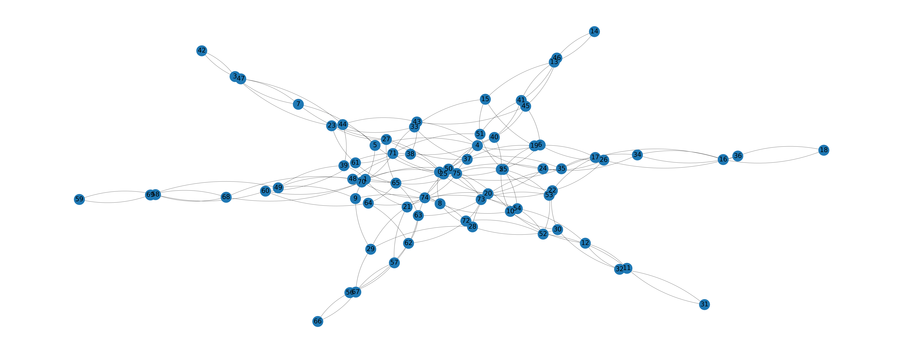
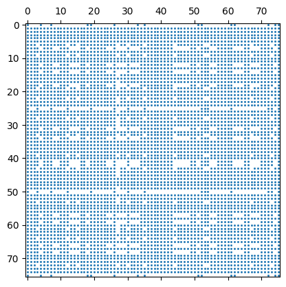
[95]:
net = nt.Network(notebook=True, filter_menu=True, select_menu=True, font_color="black")
net.from_nx(g)
for node in net.nodes:
node["title"] = str(node["id"])
net.show_buttons(filter_=['nodes', 'edges', 'physics'])
net.show("nx.html")
Warning: When cdn_resources is 'local' jupyter notebook has issues displaying graphics on chrome/safari. Use cdn_resources='in_line' or cdn_resources='remote' if you have issues viewing graphics in a notebook.
nx.html
[95]:
[121]:
entropies = np.asarray([model.entropy(evecs[:, i], 0, 0) for i in range(basis.n_states)])
entropy_df = pd.Series(entropies, name="entropy")
entropy_df.loc[(entropy_df.index >= 20) & (entropy_df.index <= 50) & (entropy_df < 1.75)]
[121]:
20 1.058436
21 1.059513
22 1.061746
23 1.054004
24 1.074146
25 1.075756
26 1.012101
27 1.045869
28 1.041082
29 1.036557
30 0.997521
31 1.003358
32 1.054331
33 1.045045
34 1.032524
35 1.043826
36 1.053413
37 1.049003
38 1.061464
39 1.071072
40 1.050495
41 1.034524
42 1.093099
43 1.087584
44 0.949660
45 1.050145
46 1.028086
47 1.045876
48 1.041796
49 1.025918
50 1.020980
Name: entropy, dtype: float64
[122]:
entropy_df.plot(style='o')
[122]:
<Axes: >
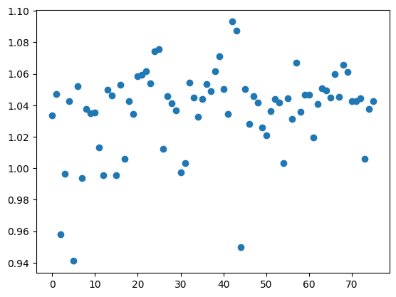
[104]:
plt.plot(evecs[:, 44], linestyle='--', marker='o')
np.where(np.abs(evecs[:, 44]) > 0.15)[0]
[104]:
array([15, 17, 23, 26, 29, 30, 44, 45, 49, 52, 60, 62])
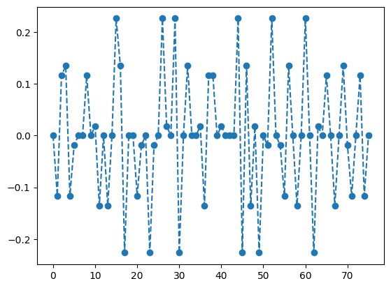
[106]:
evecs_df = pd.DataFrame.from_dict(
{
"eval": evals,
"kin": [(evec.T @ model.kinetic_term @ evec).item() for evec in evecs.T],
"pot": [(evec.T @ model.potential_term @ evec).item() for evec in evecs.T],
}
)
evecs_df.iloc[44] #[evecs_df["kin"].abs() < 1e-12]
[106]:
eval 4.678363
kin 0.730499
pot 3.947864
Name: 44, dtype: float64
[130]:
coup_j = np.ones((np.prod(model.shape), 1))
coup_j[0] = 1.05
energy_lump_model = QuantumLinkModel(coup_j, coup_rk, model.shape, basis)
energy_lump_ham = energy_lump_model.hamiltonian
# scar_state = np.zeros((basis.n_states, 1))
# scar_state[np.array([30, 45, 49, 26, 29, 44, 15, 52, 60, 17, 23, 62]), 0] = np.array([-1, -1, -1, 1, 1, 1, 1, 1, 1, -1, -1, -1]) # based on 44
# scar_state[np.array([3, 11, 16, 32, 36, 47, 58, 69]), 0] = np.array([1, -1, -1, 1, 1, -1, 1, -1]) # based on 24
# scar_state /= np.linalg.norm(scar_state)
scar_state = evecs[:, 44]
start, stop, num = 0, 2000, 100
evol_states = expm_multiply(-1j * energy_lump_ham, scar_state, start=start, stop=stop, num=num)
fidelity = [np.abs(evol_state.T @ scar_state).item() ** 2 for evol_state in evol_states]
entropy = [model.entropy(evol_state.flatten(), 1, 0) for evol_state in evol_states]
plt.plot(np.linspace(start, stop, num), fidelity, linestyle="--", marker="o")
plt.ylim(0.0001, 1.1)
# plt.yscale('log')
plt.xlabel("t")
plt.ylabel("Fidelity(t)")
plt.tight_layout()
plt.show()
plt.plot(np.linspace(start, stop, num), entropy, linestyle="--", marker="o")
plt.xlabel("t")
plt.ylabel("EE(t)")
plt.tight_layout()
plt.show()
final_state = np.real_if_close(evol_states[-1], tol=1e-12)
print(f"final fidelity = {fidelity[-1]}")
print(f"O_kin @ psi_scar = {(model.kinetic_term @ final_state).flatten()}")
print(f"<O_kin> = {(final_state.T @ model.kinetic_term @ final_state).item()}")
print(f"<O_pot> = {(final_state.T @ model.potential_term @ final_state).item()}")
print(f"<H> = {(final_state.T @ model.hamiltonian @ final_state).item()}")
final fidelity = 0.9684200052672003
O_kin @ psi_scar = [ 4.74315894e-03-0.01351011j 1.03124779e-02+0.0318116j
-7.33306781e-03-0.03792991j 1.52997953e-02+0.18422271j
1.03124779e-02+0.0318116j 5.65523991e-03-0.00780859j
-2.38554269e-03+0.01385663j -3.13183015e-03+0.0050453j
-7.33306781e-03-0.03792991j -2.38554269e-03+0.01385663j
-8.56180912e-03-0.00084907j -1.06443298e-02-0.21186007j
3.77536184e-03+0.01009899j -6.65967834e-02-0.23316644j
4.68541366e-03+0.00990252j 4.80413953e-02+0.15468343j
8.00044595e-02+0.21580224j -5.40763198e-02-0.1522819j
-1.46383257e-02-0.00309953j 2.79780403e-03-0.00045922j
8.00265490e-03+0.03862601j -4.03437097e-03+0.01099935j
-8.74394704e-03+0.02450193j -6.58516552e-03-0.12468163j
-4.03437097e-03+0.01099935j -5.63272425e-04+0.00214595j
4.15657095e-02+0.13874161j -8.01670083e-03+0.00049375j
-8.74394704e-03+0.02450193j 4.15657095e-02+0.13874161j
-2.04103940e-02-0.15438129j -1.65784189e-02-0.00708621j
4.32299982e-02+0.22165957j -1.01782856e-02+0.00430125j
-5.06235089e-03+0.00535867j 3.50300113e-03-0.0122706j
-5.43469476e-02-0.20895467j -4.47406122e-03-0.03199298j
-1.39877506e-02-0.03288221j -4.09086539e-03-0.01194989j
-1.99571287e-03-0.01061221j -7.85315053e-03+0.0032013j
1.65833918e-02+0.01981576j -4.09086539e-03-0.01194989j
3.82538196e-02+0.14726209j -3.61579908e-02-0.15076817j
5.70365967e-02+0.21604356j -4.83700054e-02-0.2317743j
-1.99571287e-03-0.01061221j -3.61579908e-02-0.15076817j
-4.72334768e-03+0.00378277j 5.41275120e-05+0.00747382j
4.61661124e-03+0.1427896j 1.67261583e-02-0.01445576j
3.83624394e-03-0.00639957j 3.94113378e-03+0.03493185j
8.00044595e-02+0.21580224j -5.06235089e-03+0.00535867j
-6.65967834e-02-0.23316644j 4.68541366e-03+0.00990252j
4.80413953e-02+0.15468343j -1.01782856e-02+0.00430125j
-5.40763198e-02-0.1522819j 3.50300113e-03-0.0122706j
2.79780403e-03-0.00045922j -4.47406122e-03-0.03199298j
-1.46383257e-02-0.00309953j -5.43469476e-02-0.20895467j
-7.85315053e-03+0.0032013j 5.70365967e-02+0.21604356j
5.41275120e-05+0.00747382j 1.99522153e-02+0.04243186j
1.67261583e-02-0.01445576j -1.21787411e-02-0.03798336j
3.94113378e-03+0.03493185j -1.92233570e-03+0.01589628j]
<O_kin> = (-0.6240604520813793+0.3289334174913119j)
<O_pot> = (-3.4166034229539792+1.73700287895565j)
<H> = (-4.040663875035359+2.065936296446962j)
Lattice 6x4#
[107]:
coup_j, coup_rk = (1, 1)
basis, model = setup_model(lattice_shape=(6, 4), n_solution=1456, coup_j=coup_j, coup_rk=coup_rk)
evals, evecs = np.linalg.eigh(model.hamiltonian)
2023-12-17 17:29:03 [deep_first_search.py] INFO: Deep First Search starts.
2023-12-17 17:29:12 [deep_first_search.py] INFO: Found 1456 Solutions as required in 27921 steps.
[108]:
df = basis.dataframe.copy(deep=True)
df.index = format_custom_index(df.index)
df
[108]:
| 0 | 1 | 2 | 3 | 4 | 5 | 6 | 7 | 8 | 9 | ... | 38 | 39 | 40 | 41 | 42 | 43 | 44 | 45 | 46 | 47 | |
|---|---|---|---|---|---|---|---|---|---|---|---|---|---|---|---|---|---|---|---|---|---|
| (0) 75046264433595 | 0 | 1 | 0 | 0 | 0 | 1 | 0 | 0 | 0 | 1 | ... | 1 | 1 | 1 | 0 | 1 | 1 | 1 | 0 | 1 | 1 |
| (1) 75046599846843 | 0 | 1 | 0 | 0 | 0 | 1 | 0 | 0 | 0 | 1 | ... | 1 | 1 | 1 | 0 | 1 | 1 | 1 | 0 | 1 | 1 |
| (2) 75051631045563 | 0 | 1 | 0 | 0 | 0 | 1 | 0 | 0 | 0 | 1 | ... | 1 | 1 | 1 | 0 | 1 | 1 | 1 | 0 | 1 | 1 |
| (3) 75051966458811 | 0 | 1 | 0 | 0 | 0 | 1 | 0 | 0 | 0 | 1 | ... | 1 | 1 | 1 | 0 | 1 | 1 | 1 | 0 | 1 | 1 |
| (4) 75053308111803 | 0 | 1 | 0 | 0 | 0 | 1 | 0 | 0 | 0 | 1 | ... | 1 | 1 | 1 | 0 | 1 | 1 | 1 | 0 | 1 | 1 |
| ... | ... | ... | ... | ... | ... | ... | ... | ... | ... | ... | ... | ... | ... | ... | ... | ... | ... | ... | ... | ... | ... |
| (1451) 262694465618193 | 1 | 1 | 1 | 0 | 1 | 1 | 1 | 0 | 1 | 1 | ... | 0 | 1 | 0 | 0 | 0 | 1 | 0 | 0 | 0 | 1 |
| (1452) 262694801031441 | 1 | 1 | 1 | 0 | 1 | 1 | 1 | 0 | 1 | 1 | ... | 0 | 1 | 0 | 0 | 0 | 1 | 0 | 0 | 0 | 1 |
| (1453) 262694884884753 | 1 | 1 | 1 | 0 | 1 | 1 | 1 | 0 | 1 | 1 | ... | 0 | 1 | 0 | 0 | 0 | 1 | 0 | 0 | 0 | 1 |
| (1454) 262696142684433 | 1 | 1 | 1 | 0 | 1 | 1 | 1 | 0 | 1 | 1 | ... | 0 | 1 | 0 | 0 | 0 | 1 | 0 | 0 | 0 | 1 |
| (1455) 262696226537745 | 1 | 1 | 1 | 0 | 1 | 1 | 1 | 0 | 1 | 1 | ... | 0 | 1 | 0 | 0 | 0 | 1 | 0 | 0 | 0 | 1 |
1456 rows × 48 columns
[140]:
evecs_df = pd.DataFrame.from_dict(
{
"eval": evals,
"kin": [(evec.T @ model.kinetic_term @ evec).item() for evec in evecs.T],
"pot": [(evec.T @ model.potential_term @ evec).item() for evec in evecs.T],
}
)
evecs_df.iloc[254] #[evecs_df["kin"].abs() < 1e-4]
[140]:
eval 4.000000
kin -0.071014
pot 4.071014
Name: 254, dtype: float64
[109]:
g = nx.from_numpy_array(-model.kinetic_term)
# left, right = nx.bipartite.sets(g)
# pos = nx.bipartite_layout(g, left, align='horizontal')
pos = nx.spectral_layout(g)
pos = {k: v + np.random.normal(0, 0.08, 2) for k, v in pos.items()}
fig = plt.figure(figsize=(82, 32))
nx.draw(g, pos, with_labels=True, node_size=5000, font_size=42, arrows=True, connectionstyle="arc3,rad=0.15")
plt.show()
plt.spy(evecs, precision=1e-12, markersize=0.05)
plt.show()
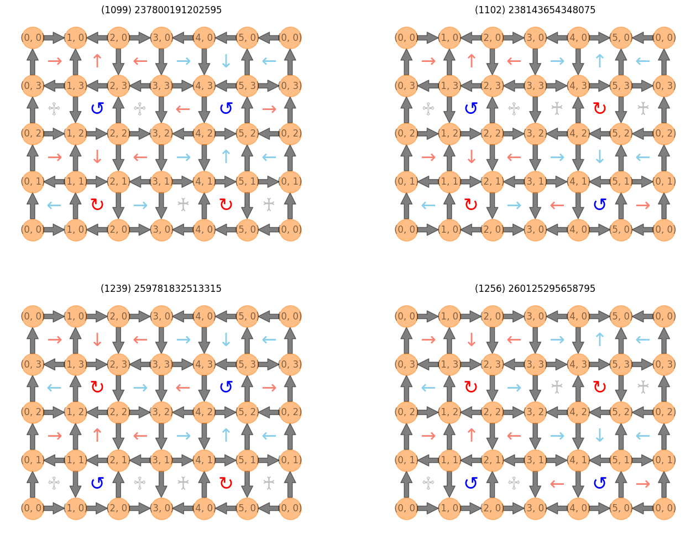
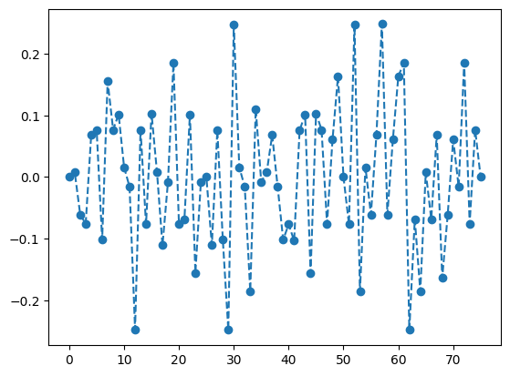
[110]:
net = nt.Network(notebook=True, filter_menu=True, select_menu=True, font_color="black")
net.from_nx(g)
for node in net.nodes:
node["title"] = str(node["id"])
net.show_buttons(filter_=['nodes', 'edges', 'physics'])
net.show("nx.html")
Warning: When cdn_resources is 'local' jupyter notebook has issues displaying graphics on chrome/safari. Use cdn_resources='in_line' or cdn_resources='remote' if you have issues viewing graphics in a notebook.
nx.html
[110]:
[136]:
entropies = np.asarray([model.entropy(evecs[:, i], 0, 0) for i in range(basis.n_states)])
entropy_df = pd.Series(entropies, name="entropy")
entropy_df[entropy_df < 1.6]
[136]:
254 0.768489
1219 1.511229
Name: entropy, dtype: float64
[137]:
entropy_df.plot(style='o')
[137]:
<Axes: >
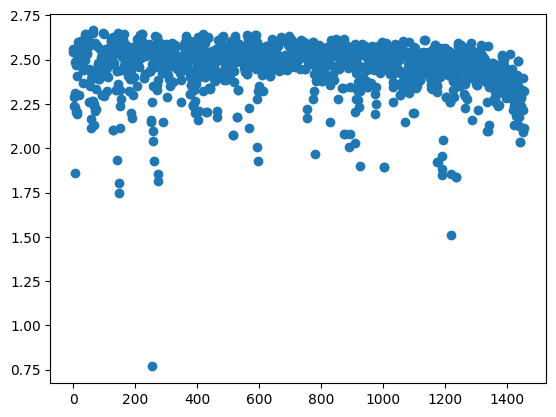
[139]:
plt.plot(evecs[:, 254], linestyle='--', marker='o')
np.where(np.abs(evecs[:, 254]) > 0.15)[0]
[139]:
array([ 367, 390, 655, 695, 1099, 1102, 1239, 1256])
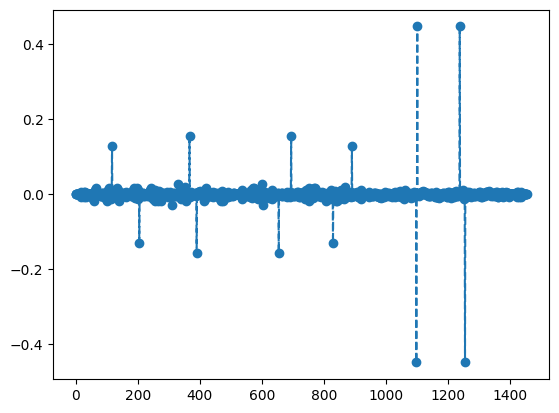
[143]:
fig, axes = plt.subplots(2, 2, figsize=(16, 12), facecolor="white")
ax = axes.flatten()
for i, val in enumerate([1099, 1102, 1239, 1256]):
g = GraphVisualizer(SquareLattice(*model.shape, basis.dataframe.iloc[val]))
g.plot(show=False, ax=ax[i], node_size=800)
ax[i].set_title(f"{df.index[val]}")
[113]:
g = GraphVisualizer(SquareLattice(*model.shape, basis.dataframe.iloc[1213]))
g.plot(node_size=800)
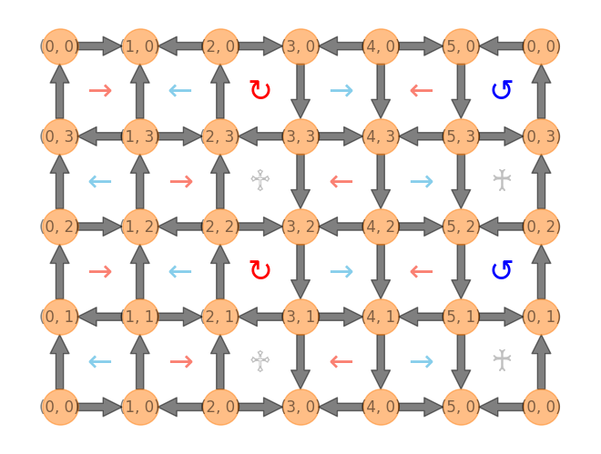
[42]:
coup_j = np.ones((np.prod(model.shape), 1))
coup_j[0] = 1.1
energy_lump_model = QuantumLinkModel(coup_j, coup_rk, model.shape, basis)
energy_lump_ham = energy_lump_model.hamiltonian
scar_state = np.zeros((basis.n_states, 1))
scar_state[np.array([1099, 1102, 1239, 1256]), 0] = np.array([1, -1, -1, 1])
scar_state /= np.linalg.norm(scar_state)
start, stop, num = 0, 200, 100
evol_states = expm_multiply(-1j * energy_lump_ham, scar_state, start=start, stop=stop, num=num)
fidelity = [np.abs(evol_state.T @ scar_state).item() ** 2 for evol_state in evol_states]
entropy = [model.entropy(evol_state.flatten(), 1, 0) for evol_state in evol_states]
plt.plot(np.linspace(start, stop, num), fidelity, linestyle="--", marker="o")
plt.ylim(0.0001, 1.1)
# plt.yscale('log')
plt.xlabel("t")
plt.ylabel("Fidelity(t)")
plt.tight_layout()
plt.show()
plt.plot(np.linspace(start, stop, num), entropy, linestyle="--", marker="o")
plt.xlabel("t")
plt.ylabel("EE(t)")
plt.tight_layout()
plt.show()
final_state = np.real_if_close(evol_states[-1], tol=1e-12)
print(f"final fidelity = {fidelity[-1]}")
print(f"O_kin @ psi_scar = {(model.kinetic_term @ final_state).flatten()}")
print(f"<O_kin> = {(final_state.T @ model.kinetic_term @ final_state).item()}")
print(f"<O_pot> = {(final_state.T @ model.potential_term @ final_state).item()}")
print(f"<H> = {(final_state.T @ model.hamiltonian @ final_state).item()}")
/Users/tandaolin/projects/qlinks/.venv/lib/python3.11/site-packages/scipy/sparse/linalg/_eigen/arpack/arpack.py:1272: RuntimeWarning: k >= N - 1 for N * N square matrix. Attempting to use scipy.linalg.eig instead.
warnings.warn("k >= N - 1 for N * N square matrix. "
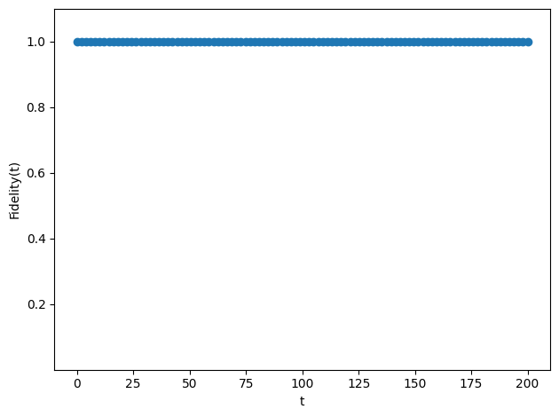
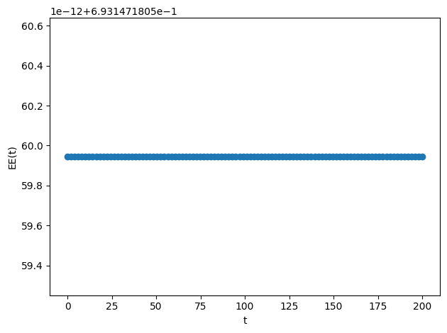
final fidelity = 1.000000000000004
O_kin @ psi_scar = [0.+0.j 0.+0.j 0.+0.j ... 0.+0.j 0.+0.j 0.+0.j]
<O_kin> = 0j
<O_pot> = (-2.3934538551791857+3.204899162708247j)
<H> = (-2.3934538551791857+3.204899162708247j)
Lattice 8x4#
[ ]:
coup_j, coup_rk = (1, 1)
gauss_law = GaussLaw.from_staggered_charge_distri(8, 4)
gauss_law.flux_sector = (0, 0)
dfs = DeepFirstSearch(gauss_law, max_steps=int(1e+8))
basis = gauss_law.to_basis(dfs.solve(n_solution=17412))
model = QuantumLinkModel(coup_j, coup_rk, (8, 4), basis)
[ ]:
df = basis.dataframe.copy(deep=True)
df.index = format_custom_index(df.index)
df
[ ]:
g = nx.from_numpy_array(-model.kinetic_term)
# left, right = nx.bipartite.sets(g)
# pos = nx.bipartite_layout(g, left, align='horizontal')
pos = nx.spectral_layout(g)
# pos = {k: v + np.random.normal(0, 0.08, 2) for k, v in pos.items()}
fig = plt.figure(figsize=(82, 32))
nx.draw(g, pos, with_labels=True, node_size=5000, font_size=42, arrows=True, connectionstyle="arc3,rad=0.15")
plt.show()
plt.spy(evecs, precision=1e-12, markersize=0.05)
plt.show()
[ ]: